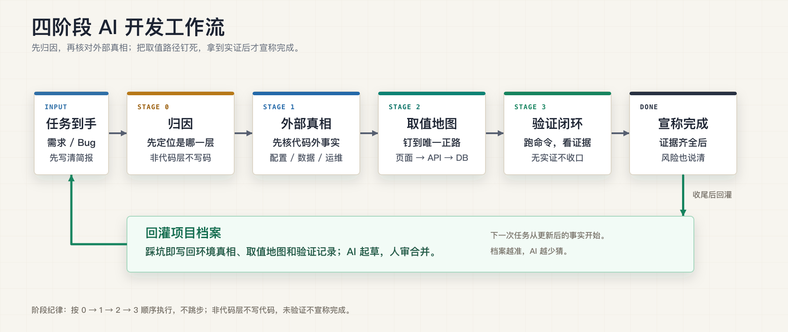

错误归因
配置、数据、权限、流程定义、目标环境差异被误判成代码 bug，导致 AI 在错误层面持续修改。
工程化落地方案
面向真实业务开发中常见的外部依赖、环境差异、配置行为和验证缺口，把 AI 协作拆成可执行的工作流：方案发散、任务准备、归因、外部真相、取值地图、实现、验证闭环、回灌档案。
在这类项目里，主要风险来自代码外事实不可见、跨层取值不一致、环境差异未确认，以及缺少可复核的完成证据。
配置、数据、权限、流程定义、目标环境差异被误判成代码 bug，导致 AI 在错误层面持续修改。
页面展示名、前端 value、接口参数、后端枚举、数据库字段不是同一个值，调用真实 API 也可能走错路径。
只有“已修改”的说明，没有测试命令、接口返回、页面路径、日志证据和未覆盖风险，后续排查无法复用。
工作流不是靠开发人员记住规范，而是通过 bootstrap、项目说明文件和 skills 把约束注入到每个业务仓库。
~/.four-stage-ai-workflow。ai-workflow/，并注入自然语言路由。ai-task-brainstorm、ai-task-preflight、attribute-rootcause、verify-closure。# 每个业务仓库内执行 cd /path/to/business-repo curl -fsSL https://raw.githubusercontent.com/Coder42Y/four-gate-ai-workflow/master/bootstrap.sh -o /tmp/four-stage-bootstrap.sh bash /tmp/four-stage-bootstrap.sh # 之后从业务仓库启动 Codex codex
每个文件都有明确用途：有的约束 AI 行为，有的记录项目事实，有的负责把阶段产物沉淀下来。
AGENTS.md 注入片段环境真相档案.mdai-task-brainstormai-task-preflight取值地图增补.mdattribute-rootcauseverify-closure四阶段的重点不是流程图本身，而是每个阶段都规定了 AI 可以做什么、必须交付什么、什么时候不能继续。

下面不是示意口号，而是这套工作流要求 AI 在真实 bug 里输出的链路级排查结果。
completed。GET /api/orders?status=completedOrderStatus.FINISHED。<if test="status != null"> 才拼接筛选条件。DONE。# 触发归因 先归因，不要急着写代码。 现象：订单列表选择“已完成”后仍显示全部订单。 请沿页面选择值、接口参数、DTO、枚举、 SQL 条件、数据库字段逐层排查，并标明 哪一层有证据，哪一层只是推测。
# 触发取值地图
请画出 status 的取值地图：
UI 展示名 / 前端 value / API 参数 / 后端枚举 /
SQL 条件 / DB 字段值。
如果存在多套命名，先给出映射方案，
再判断是否需要改代码。
阶段 3 要求把结果写成可复核的证据，而不是停在“我改完了”。证据越具体，后续交接和回滚成本越低。
# 验证闭环提示词 验证闭环：这次改动是否真的生效？ 请按“命令证据 / 接口证据 / 页面路径 / 日志证据 / 未覆盖风险 / 回灌内容”输出。 没有执行过的验证不要写成已通过。
这套工作流适合先在一个真实业务项目里试点。不同技术栈可以复用阶段思想，但环境档案、取值地图和验证命令必须按项目重填。
配置中心、权限系统、流程引擎、数据字典、CI/CD、目标环境差异等特征越明显，收益越直接。
拿真实需求和 bug 试点，观察是否减少错误归因、取值误判和无证据交付，而不是只看安装是否成功。
每次任务结束后应能看到归因、外部事实、取值地图、验证证据和回灌记录，而不是只有代码 diff。
四阶段的工程价值在于把 AI 辅助开发约束成可复核流程：先确认任务和事实，再决定是否写代码；写完以后用证据关闭，并把新增事实沉淀回项目。